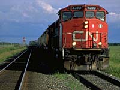

Primary Industries
Secondary Industries
Wood Products
Other Products
Value of Products
Other Forest Uses
Industry Future
|
|
Primary Industries
The estimated replacement value of forest industry capital investment
in Saskatchewan is $550 million. There are 180 primary wood plants
including:
- sawmills
- pulp mills
- plywood plants
- waferboard plant
- planing mills
- preservation plants
- building timber plants
- lath plants
|

Some of the products produced by these industries are pulp, waferboard,
plywood, lumber, fence posts, poles, building logs, lath and chopsticks.
|
From a provincial perspective, the primary wood industry accounts
for almost one out of every 10 jobs in the manufacturing sector.
The six largest sawmills provide 32 percent of employment and
a further 28 percent are employed at the pulp mill in Prince Albert.
With more than 85 per cent of Saskatchewan's wood plants and 90
per cent of associated employment located across the northern
grain belt, local communities such as Big River, Meadow Lake,
Glaslyn, Prince Albert and Hudson Bay, rely on the forest industry
to enhance their economies.
|
Secondary and Tertiary Industries
The economic impact of the forest industry broadens with the inclusion
of secondary and tertiary forest industries which further refine
primary wood products to create new manufactured goods.
|
Examples
of these industries include:
- paper products industry
- hygienic paper products industry
- printing companies
- publishing firms
- furniture makers
- wooden box factories
- wooden doors and windows factories
- millwork companies
- stationery products industry
- paper bag industry
- asphalt roofing industry
- coated and treated paper industry
- coffin and casket industry
- wooden kitchen and bathroom cabinets factories
- prefabricated wooden buildings factories
- corrugated box industry
- wooden boxes and pallets industry
|
These industries are located in communities throughout Saskatchewan
and play a prominent role in raising the total number of direct
and indirect forest industry employment jobs.
|
Both primary and secondary industries produce valuable products
which are used both in Saskatchewan and elsewhere. The products
produced in Saskatchewan include wood products, paper
products and other products such as foods and medicines.
|
Wood Products
More than 5000 products can be made from wood. Many are
well known: lumber, pulp, all kinds of papers, furniture, toothpicks,
and matches. Other products are not so well known. One wood product,
vanillin, is used as a base for artificial food flavouring and
in some pharmaceutical products. Other wood products include shatterproof
glass, adhesives, furniture upholstery, rayon clothing and turpentine.
|

Paper is an extremely valuable forest product.
Wood is chemically broken down and reconstituted into paper
and paper-fibre products. Canadians are per capita one of the
largest consumers of paper products. Roughly 35 percent of municipal
waste consists of paper and paperboard products. Recycling programs,
however, are reducing the amount of wastepaper going to landfills
and are responsible for turning it into new products.
|
For example,
post-consumer waste - fine paper, magazines and newspapers - can
be collected in community recycling programs and used by some
pulp and paper mills to make new paper products. Wastepaper can
be recycled seven times before the fibre becomes to short to produce
good newsprint. At present, Canada recovers 31 percent of the
newsprint it consumes.
|
Other Forest Products
Wood products are only one of many benefits we as humans derive
from the forest. Others range from simple personal use to full-scale
harvest. Mushrooms, such as morels and pine, and blueberries are
harvested both commercially and domestically. Maple syrup derived
from the indigenous Manitoba maple, while distinctively different
in flavour from that of the eastern sugar maples, has a pleasant
"fruity" taste. Indian peoples and early settlers
were familiar with the making of maple syrup. Today, efforts are
being made to revitalize production, by taking advantage of the
millions of Manitoba maples provided to farmers to plant in homestead
shelterbelts. Presently, there are approximately 1200 trees being
tapped in the Cumberland House area, with smaller numbers in the
Melfort - Nipawin area and around Indian Head.
|

Nature crafting comprises a multi-million dollar industry in the
United States, and producers are now looking toward Saskatchewan
as the source of high quality products. Leaves, mosses, cones,
branches, and dried grasses collected from areas earmarked for
timber harvesting are used in flower arrangements, wreaths, and
other decorative pieces. The art of birch bark bitings, wherein
intricate patterns are produced by biting into thin strips of
bark from the white birch, is a popular Aboriginal craft. Varieties
of fragrant potpourri are made out of herbs, petals, cones, barks
and berries.
|
Essential oils extracted from leaves and boughs are fundamental
to the perfume industry and are at the core of the food flavoring
industry. The herb ginseng is used in teas and health tonics heralded
for their ability to increase longevity. Echinacea root is used in medicines to build healthy immune systems
and remedies made from aspen and chokecherry are used in the treatment
of psoriasis.
Value of Forest Products
The manufacturing process uses intermediate goods and services
to transform raw materials into finished goods and to add value
to final products. Examples of such goods and services in the
forest industry include fuel and electricity, wood-preserving
chemicals, contracting fees and legal and accounting fees. Without
the use of these goods and services, forest product firms could
not produce the end products demanded by consumers. Forest product
firms include both primary and secondary wood-using firms.
|
The value-added generated by an industry is a measure of that
industry's contribution to a total regional, provincial and national
income. The value added for Canada as a whole is described as
its Gross Domestic Product (GDP).

Over 85 percent of Saskatchewan's primary forest products
are sold to out-of-province markets. The United States is the
principal trading partner, but significant markets are also found
in Canada, Japan, Mexico, Australia, England and other countries.
The revenue from these sales helps to ensure that Saskatchewan
residents continue to enjoy access to foreign manufactured goods,
fruits, vegetables and other desired trade items.
|
Other Forest Uses
More and more, people are traveling to Saskatchewan's natural
areas specifically to enjoy the scenery, the wild plants, the
animals, as well as cultural aspects found in the areas, making
ecotourism the fastest growing area of Saskatchewan's tourism
industry. An estimated $650 million of Saskatchewan's Gross Domestic
Product (GDP) is derived from tourism.
|
Recreational value of the forest is often understated. People
travel to Saskatchewan's forest throughout the year to "get
away from it all" and relax. Recreational activities
consist of consumptive and non-consumptive uses
of resources in the forest environment. Consumptive uses include
hunting, fishing and trapping. Non-consumptive forest activities
are numerous and include hiking, skiing, camping, boating, photography,
bird watching and general wildlife viewing.
|
Forest Industry Future
It takes sound, long-term forest management planning to ensure
that employment opportunities are maintained and enhanced in the
forestry industry. In the future, forest industry workers will
continue to be found interpreting satellite imagery, operating
computers, updating the provincial forest inventory, nurturing
trees, fighting fires, picking cones or conducting scientific
research. The forest industry will also provide employment for
truckers, equipment dealers, tree harvesters, tree planters, sawmill
and pulp mill workers, wood product manufacturers and a host of
other occupations.
|

Many of these jobs have been made more secure with the modernization
of the pulp mill and construction of the paper mill in Prince
Albert. The paper mill is the
second largest of its kind in Canada and represents the first
major involvement by a Saskatchewan forest company in large scale
secondary manufacturing. Managed effectively, Saskatchewan's forests will continue to produce
a wide spectrum of high-tech and labor intensive employment in
the future.
|
|